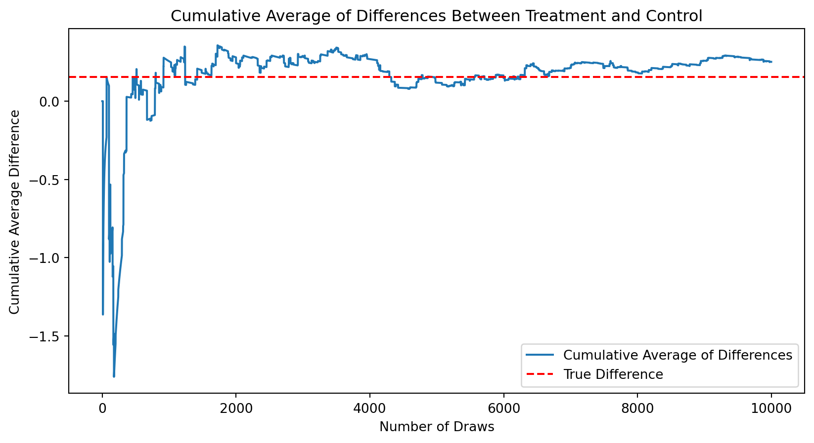
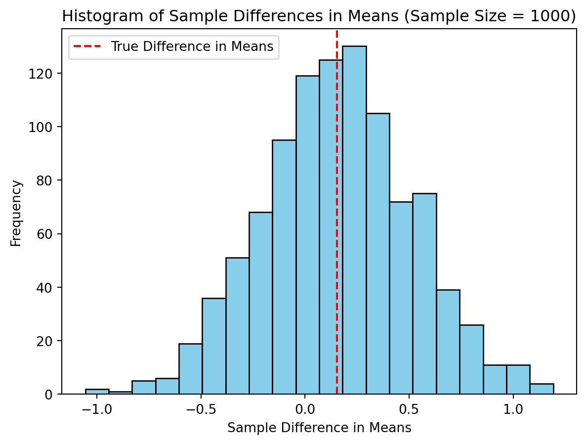

(50083, 51)A Replication of Karlan and List (2007)
Introduction
Dean Karlan at Yale and John List at the University of Chicago conducted a field experiment to test the effectiveness of different fundraising letters. They sent out 50,000 fundraising letters to potential donors, randomly assigning each letter to one of three treatments: a standard letter, a matching grant letter, or a challenge grant letter. They published the results of this experiment in the American Economic Review in 2007. The article and supporting data are available from the AEA website and from Innovations for Poverty Action as part of Harvard’s Dataverse.
In their experiment, Dean Karlan and John A. List conducted a large-scale natural field experiment to explore the impact of price on charitable giving. They used direct mail solicitations sent to over 50,000 previous donors of a nonprofit organization to test the effectiveness of matching grants on charitable donations. The experiment randomly assigned individuals to either a control group or a matching grant treatment group. Within the matching grant treatment group, individuals were further randomly assigned to different matching grant rates, matching grant maximum amounts, and suggested donation amounts.
The study found that announcing the availability of match money significantly increased both the revenue per solicitation (by 19%) and the probability of making a donation (by 22%). However, larger matching ratios ($3:$1 and $2:$1) did not have an additional impact compared to a smaller matching ratio ($1:$1). The elasticity estimate of the price change from the baseline to the treatment groups was -0.30, which is near the lower range of the elasticity of giving with respect to transitory price changes reported in previous studies.
Interestingly, the effectiveness of the matching gift varied by the political environment of the donors. In states that voted for George W. Bush in the 2004 presidential election (“red” states), the match increased the revenue per solicitation by 55%, while in “blue” states, there was little effect observed.
This project seeks to replicate their results.
Data
Description
There are 50083 rows and 51 columns in this dataset.
treatment control ratio ratio2 ratio3 \
count 50083.000000 50083.000000 50083 50083.000000 50083.000000
unique NaN NaN 4 NaN NaN
top NaN NaN Control NaN NaN
freq NaN NaN 16687 NaN NaN
mean 0.666813 0.333187 NaN 0.222311 0.222211
std 0.471357 0.471357 NaN 0.415803 0.415736
min 0.000000 0.000000 NaN 0.000000 0.000000
25% 0.000000 0.000000 NaN 0.000000 0.000000
50% 1.000000 0.000000 NaN 0.000000 0.000000
75% 1.000000 1.000000 NaN 0.000000 0.000000
max 1.000000 1.000000 NaN 1.000000 1.000000
size size25 size50 size100 sizeno ... \
count 50083 50083.000000 50083.000000 50083.000000 50083.000000 ...
unique 5 NaN NaN NaN NaN ...
top Control NaN NaN NaN NaN ...
freq 16687 NaN NaN NaN NaN ...
mean NaN 0.166723 0.166623 0.166723 0.166743 ...
std NaN 0.372732 0.372643 0.372732 0.372750 ...
min NaN 0.000000 0.000000 0.000000 0.000000 ...
25% NaN 0.000000 0.000000 0.000000 0.000000 ...
50% NaN 0.000000 0.000000 0.000000 0.000000 ...
75% NaN 0.000000 0.000000 0.000000 0.000000 ...
max NaN 1.000000 1.000000 1.000000 1.000000 ...
redcty bluecty pwhite pblack page18_39 \
count 49978.000000 49978.000000 48217.000000 48047.000000 48217.000000
unique NaN NaN NaN NaN NaN
top NaN NaN NaN NaN NaN
freq NaN NaN NaN NaN NaN
mean 0.510245 0.488715 0.819599 0.086710 0.321694
std 0.499900 0.499878 0.168561 0.135868 0.103039
min 0.000000 0.000000 0.009418 0.000000 0.000000
25% 0.000000 0.000000 0.755845 0.014729 0.258311
50% 1.000000 0.000000 0.872797 0.036554 0.305534
75% 1.000000 1.000000 0.938827 0.090882 0.369132
max 1.000000 1.000000 1.000000 0.989622 0.997544
ave_hh_sz median_hhincome powner psch_atlstba \
count 48221.000000 48209.000000 48214.000000 48215.000000
unique NaN NaN NaN NaN
top NaN NaN NaN NaN
freq NaN NaN NaN NaN
mean 2.429012 54815.700533 0.669418 0.391661
std 0.378115 22027.316665 0.193405 0.186599
min 0.000000 5000.000000 0.000000 0.000000
25% 2.210000 39181.000000 0.560222 0.235647
50% 2.440000 50673.000000 0.712296 0.373744
75% 2.660000 66005.000000 0.816798 0.530036
max 5.270000 200001.000000 1.000000 1.000000
pop_propurban
count 48217.000000
unique NaN
top NaN
freq NaN
mean 0.871968
std 0.258654
min 0.000000
25% 0.884929
50% 1.000000
75% 1.000000
max 1.000000
[11 rows x 51 columns]The above shows a general distribution for each variable.
treatment 0
control 0
ratio 0
ratio2 0
ratio3 0
size 0
size25 0
size50 0
size100 0
sizeno 0
ask 0
askd1 0
askd2 0
askd3 0
ask1 0
ask2 0
ask3 0
amount 0
gave 0
amountchange 0
hpa 0
ltmedmra 0
freq 0
years 1
year5 0
mrm2 1
dormant 0
female 1111
couple 1148
state50one 0
nonlit 452
cases 452
statecnt 0
stateresponse 0
stateresponset 0
stateresponsec 3
stateresponsetminc 3
perbush 35
close25 35
red0 35
blue0 35
redcty 105
bluecty 105
pwhite 1866
pblack 2036
page18_39 1866
ave_hh_sz 1862
median_hhincome 1874
powner 1869
psch_atlstba 1868
pop_propurban 1866
dtype: int64This shows the number of missing values in each column.
Balance Test
As an ad hoc test of the randomization mechanism, I provide a series of tests that compare aspects of the treatment and control groups to assess whether they are statistically significantly different from one another.
Testing mrm2 - Months since last donation.
T-test results: t-statistic = 0.11953155228177251, p-value = 0.9048549631450832Linear regression results:
OLS Regression Results
==============================================================================
Dep. Variable: mrm2 R-squared: 0.000
Model: OLS Adj. R-squared: -0.000
Method: Least Squares F-statistic: 0.01428
Date: Wed, 24 Dec 2025 Prob (F-statistic): 0.905
Time: 18:22:11 Log-Likelihood: -1.9585e+05
No. Observations: 50082 AIC: 3.917e+05
Df Residuals: 50080 BIC: 3.917e+05
Df Model: 1
Covariance Type: nonrobust
==============================================================================
coef std err t P>|t| [0.025 0.975]
------------------------------------------------------------------------------
intercept 12.9981 0.094 138.979 0.000 12.815 13.181
treatment 0.0137 0.115 0.119 0.905 -0.211 0.238
==============================================================================
Omnibus: 8031.352 Durbin-Watson: 2.004
Prob(Omnibus): 0.000 Jarque-Bera (JB): 12471.135
Skew: 1.163 Prob(JB): 0.00
Kurtosis: 3.751 Cond. No. 3.23
==============================================================================
Notes:
[1] Standard Errors assume that the covariance matrix of the errors is correctly specified.
13.011828117981734
12.99814226643495Using both the t-test and linear regerssion, the p-value for the difference in mens between treatment and control groups for mrm2 is 0.905. This means that we fail to reject the null hypothesis that the treatment and control groups are statistically significantly different at the 95% confidence level, further suggesting that the randomization was successful.
mean for mrm2 control: 12.99814226643495
mean for mrm2 control: 13.011828117981734The above values matches the ones shown in Table 1.
Testing hpa - highest previous contribution
T-test results: t-statistic = 0.9704273843087994, p-value = 0.3318400397145116Linear regression results:
OLS Regression Results
==============================================================================
Dep. Variable: hpa R-squared: 0.000
Model: OLS Adj. R-squared: -0.000
Method: Least Squares F-statistic: 0.8924
Date: Wed, 24 Dec 2025 Prob (F-statistic): 0.345
Time: 18:22:11 Log-Likelihood: -2.8468e+05
No. Observations: 50083 AIC: 5.694e+05
Df Residuals: 50081 BIC: 5.694e+05
Df Model: 1
Covariance Type: nonrobust
==============================================================================
coef std err t P>|t| [0.025 0.975]
------------------------------------------------------------------------------
intercept 58.9602 0.551 107.005 0.000 57.880 60.040
treatment 0.6371 0.675 0.944 0.345 -0.685 1.960
==============================================================================
Omnibus: 66199.149 Durbin-Watson: 2.003
Prob(Omnibus): 0.000 Jarque-Bera (JB): 14448195.271
Skew: 7.552 Prob(JB): 0.00
Kurtosis: 84.826 Cond. No. 3.23
==============================================================================
Notes:
[1] Standard Errors assume that the covariance matrix of the errors is correctly specified.
59.59724
58.960167Using both the t-test and linear regerssion, the p-value for the difference in mens between treatment and control groups for hpa are both above 0.94. This means that we fail to reject the null hypothesis that the treatment and control groups are statistically significantly different at the 95% confidence level, further suggesting that the randomization was successful.
mean for mrm2 control: 58.960167
mean for mrm2 control: 59.59724The above values matches the ones shown in Table 1. Note: hpa is highest previous contribution and mrm2 is number of months since last donation.
Experimental Results
Charitable Contribution Made
First, I analyze whether matched donations lead to an increased response rate of making a donation.
As seen in the plot above, the control group appears to have a lower proportion compared to the treatment group.
T-test results: t-statistic = 3.101361000543946, p-value = 0.0019274025949016982
Linear regression results:
OLS Regression Results
==============================================================================
Dep. Variable: gave R-squared: 0.000
Model: OLS Adj. R-squared: 0.000
Method: Least Squares F-statistic: 9.618
Date: Wed, 24 Dec 2025 Prob (F-statistic): 0.00193
Time: 18:22:11 Log-Likelihood: 26630.
No. Observations: 50083 AIC: -5.326e+04
Df Residuals: 50081 BIC: -5.324e+04
Df Model: 1
Covariance Type: nonrobust
==============================================================================
coef std err t P>|t| [0.025 0.975]
------------------------------------------------------------------------------
intercept 0.0179 0.001 16.225 0.000 0.016 0.020
treatment 0.0042 0.001 3.101 0.002 0.002 0.007
==============================================================================
Omnibus: 59814.280 Durbin-Watson: 2.005
Prob(Omnibus): 0.000 Jarque-Bera (JB): 4317152.727
Skew: 6.740 Prob(JB): 0.00
Kurtosis: 46.440 Cond. No. 3.23
==============================================================================
Notes:
[1] Standard Errors assume that the covariance matrix of the errors is correctly specified.The t-test and linear regression both show a p value of 0.002. This suggest that the difference in response rates between the treatment and control groups is statistically significant, meaning that the treatment group does indeed increase the likelihood of making a charitable donation compared to the control group. This finding is also consistent with the results reported in Table 2a.
coefficient 0.004180354512949377
z-statistic: 3.101361000543931
p-value: 0.001927402594901797
OLS Regression Results
==============================================================================
Dep. Variable: gave R-squared: 0.000
Model: OLS Adj. R-squared: 0.000
Method: Least Squares F-statistic: 9.618
Date: Wed, 24 Dec 2025 Prob (F-statistic): 0.00193
Time: 18:22:11 Log-Likelihood: 26630.
No. Observations: 50083 AIC: -5.326e+04
Df Residuals: 50081 BIC: -5.324e+04
Df Model: 1
Covariance Type: nonrobust
==============================================================================
coef std err t P>|t| [0.025 0.975]
------------------------------------------------------------------------------
intercept 0.0179 0.001 16.225 0.000 0.016 0.020
treatment 0.0042 0.001 3.101 0.002 0.002 0.007
==============================================================================
Omnibus: 59814.280 Durbin-Watson: 2.005
Prob(Omnibus): 0.000 Jarque-Bera (JB): 4317152.727
Skew: 6.740 Prob(JB): 0.00
Kurtosis: 46.440 Cond. No. 3.23
==============================================================================
Notes:
[1] Standard Errors assume that the covariance matrix of the errors is correctly specified.The probit regression also confirms that the coefficient on the treatment varialbe is statistically significant (coefficient of 0.004 and p-value of 0.002). This is consistent with the findings on Table 3 column 1, suggesting that people in the treatemnt group does have increased likelihood of making a charitable donation. However, it is do be noted that while Table 3 indicates the use of Probit regression, the above was replicated with a linear regression.
The results of a probit regression is shown below:
Optimization terminated successfully.
Current function value: 0.100443
Iterations 7
coefficient 0.08678462244745795
z-statistic: 3.112930073794974
p-value: 0.0018523990147786566
Probit Regression Results
==============================================================================
Dep. Variable: gave No. Observations: 50083
Model: Probit Df Residuals: 50081
Method: MLE Df Model: 1
Date: Wed, 24 Dec 2025 Pseudo R-squ.: 0.0009783
Time: 18:22:11 Log-Likelihood: -5030.5
converged: True LL-Null: -5035.4
Covariance Type: nonrobust LLR p-value: 0.001696
==============================================================================
coef std err z P>|z| [0.025 0.975]
------------------------------------------------------------------------------
intercept -2.1001 0.023 -90.073 0.000 -2.146 -2.054
treatment 0.0868 0.028 3.113 0.002 0.032 0.141
==============================================================================While the coefficient is not the same as that on Table 3 column 1, the p-value is still 0.002, indicating that people in the treatment group does have increased likelihood of making a charitable donation.
Differences between Match Rates
Next, I assess the effectiveness of different sizes of matched donations on the response rate.
1:1 and 2:1 match ratiosT-test results: t-statistic = 0.05011583793874515, p-value = 0.9600305283739325
1:1 and 3:1 match ratiosT-test results: t-statistic = -1.0150255853798622, p-value = 0.31010466370866724
1:1 and 2:1 match ratiosT-test results: t-statistic = -0.96504713432247, p-value = 0.33453168549723933The t-tests and the p-values show that the difference in response rate betwen 1:1 and 2:1, 2:1 and 3:1, 1:1 and 3:1 are all not statistically significant at the 95% confidence level. This means that the match ratios does not increase the likelihood of someone making a charitable donation. This is consistent with the authors comments on page 8, which suggested that the figures do not show a clear pattern of increasing repsonse rates as match ratios increase.
OLS Regression Results
==============================================================================
Dep. Variable: gave R-squared: 0.000
Model: OLS Adj. R-squared: 0.000
Method: Least Squares F-statistic: 3.665
Date: Wed, 24 Dec 2025 Prob (F-statistic): 0.0118
Time: 18:22:11 Log-Likelihood: 26630.
No. Observations: 50083 AIC: -5.325e+04
Df Residuals: 50079 BIC: -5.322e+04
Df Model: 3
Covariance Type: nonrobust
==============================================================================
coef std err t P>|t| [0.025 0.975]
------------------------------------------------------------------------------
intercept 0.0179 0.001 16.225 0.000 0.016 0.020
ratio1 0.0029 0.002 1.661 0.097 -0.001 0.006
ratio2 0.0048 0.002 2.744 0.006 0.001 0.008
ratio3 0.0049 0.002 2.802 0.005 0.001 0.008
==============================================================================
Omnibus: 59812.754 Durbin-Watson: 2.005
Prob(Omnibus): 0.000 Jarque-Bera (JB): 4316693.217
Skew: 6.740 Prob(JB): 0.00
Kurtosis: 46.438 Cond. No. 4.26
==============================================================================
Notes:
[1] Standard Errors assume that the covariance matrix of the errors is correctly specified.The regression results indicate that the coefficients for the 2:1 and 3:1 match ratios are statistically significant at the 95% confidence interval, suggesting that these match sizes significantly increase the likelihood of donating compared to the baseline category, which is the control group. However, the coefficient for the 1:1 match ratio is not statistically significant, indicating that a 1:1 match does not significantly enhance the likelihood of donating when compared to no matching. Therefore, while the 2:1 and 3:1 matches are effective in increasing donation rates, the 1:1 match does not show a significant effect relative to having no match at all.
difference between 3:1 and 2:1 : 0.00010002398025293902
difference between 1:1 and 2:1 : -0.0018842510217149944
difference between 3:1 and 1:1 : 0.0019842750019679334The above is calcualted directly from data
difference between 3:1 and 2:1 : 0.00010002398025313504
difference between 1:1 and 2:1 : -0.0018842510217151158
difference between 3:1 and 1:1 : 0.001984275001968251The above is calculated using the coefficients generated from the regression above.
Both resulted in the same set of numbers.
Size of Charitable Contribution
In this subsection, I analyze the effect of the size of matched donation on the size of the charitable contribution.
difference in donation amounts between control and treatment: 0.1536054
t-statistic: 1.8605020225753781
p-value: 0.06282038947470686The p-value suggest that the difference in donation amount between the treatment and control group is not statistically significant at the 95% confidence level. This suggests that the treatment group does not appear to have a higher donation amount.
difference in donation amounts between control and treatment: -1.6683922
t-statistic: -0.5808388615237938
p-value: 0.5614758782284279Now limiting to only the people that donated, it appears that the treatment group donates about 1.66 units less than the control group. This different is not statistically significant though, as the p-value is 0.5615, well above the 0.05 threshold. Therefore, we cannot confidently assert the causal interpretation that people receiving treatment will result in reduced donation amounts.

Simulation Experiment
As a reminder of how the t-statistic “works,” in this section I use simulation to demonstrate the Law of Large Numbers and the Central Limit Theorem.
Suppose the true distribution of respondents who do not get a charitable donation match is Bernoulli with probability p=0.018 that a donation is made.
Further suppose that the true distribution of respondents who do get a charitable donation match of any size is Bernoulli with probability p=0.022 that a donation is made.
Law of Large Numbers

In this plot, the x-axis represents the number of draws, and the y-axis represents the cumulative average of the differences between the treatment and control draws. The red dashed line represents the true difference in means between the treatment and control distributions.
As the number of draws increases, you would expect the cumulative average to approach the true difference in means. This is because, with a larger sample size, the estimate of the difference in means becomes more accurate. If the cumulative average converges to the true difference in means, it indicates that the simulation is correctly capturing the underlying difference between the treatment and control groups.
Central Limit Theorem

The histograms presented illustrate the Central Limit Theorem in action, highlighting how the distribution of the differences between the sample means increasingly approximates a normal distribution as the sample size grows. Given that zero is positioned near the center of these distributions, it suggests that there is no significant difference between the donation amounts of the treatment and control groups. This central positioning of zero within the distribution indicates that any observed difference is likely due to random sampling variability rather than a true effect of the treatment. Thus, the data provides no substantial evidence to suggest that the treatment influences donation amounts compared to the control.